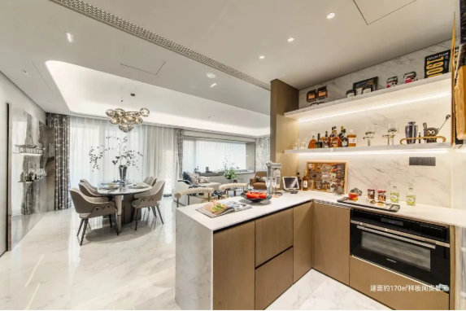

1
厨房空间设计 · 品类创新
《中国好厨房好厨电六大趋势》发布：厨房从烹饪后台走向家庭第二客厅
报告把可成长空间、AI厨房、套系化共创、绿色厨房、第二客厅和厨房美学并列为六大趋势，厨房正在成为“好房子”落地的关键样本。

中国家电网联合好住房云研究院发布《2026中国好厨房好厨电六大趋势》，判断“好房子”进入实践期后，厨房会成为居住体验升级最清晰的窗口。
报告强调，开放式厨房占比持续提升，LDK 一体化、中西厨融合、模块化收纳、灵活岛台和套系化厨电协同，正在把厨房从单一烹饪空间变成多人协作、社交陪伴和家庭审美的一部分。
小编有话说这条很适合作为研发和产品团队的“趋势底图”。未来厨房不是简单多放几台智能设备，而是要同时回答空间比例、安装预埋、设备协同、交互入口和审美融入这几道题。